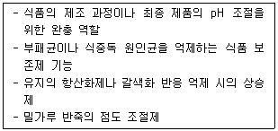
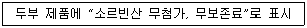
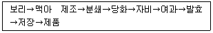

식품산업기사 (2018-04-28 기출문제)
1과목: 식품위생학
1. 오크라톡신(ochratoxin)은 무엇에 의해 생성되는 독소인가?
- 곰팡이
- 세균
- 바이러스
- 복의 일종
(정답률: 79%)

2. 공장지대의 매연 및 훈연한 육제품 등에서 검출 분리되는 강력한 발암성 물질로 식품오염에 특히 주의하여야 하는 다환방향족 탄화수소는?
- methionine sulfoximine
- polychlorobiphenyl
- nitroanillin
- benzopyrene
(정답률: 86%)
3. 식품의 포장재로 사용되는 종이류가 위생상 문제가 되는 이유가 아닌 것은?
- 형광 염료의 이행
- 포장 착색료의 용출
- 저분자량 물질의 혼입
- 납 등 유해물질의 혼입
(정답률: 62%)
4. 다음의 목적과 기능을 하는 식품 첨가물은?

- 산미료(acidulant)
- 조미료(seasoning)
- 호료(thickening agent)
- 유화제(emulsifier)
(정답률: 78%)
5. 대장균군의 추정, 확정, 완전시험에서 사용되는 배지가 아닌 것은?
- TCBS agar
- Endo agar
- EMB agar
- BGLB
(정답률: 63%)
6. 폐기물 처리에 대한 설명으로 옳지 않은 것은?
- 용기는 밀폐구조이어야 한다.
- 용기의 세척·소독은 적정 주기로 이루어져야 한다.
- 식품용기와 구분되어야 한다.
- 용기는 냄새가 누출되어도 된다.
(정답률: 95%)
7. 식중독의 발생 조건으로 틀린 것은?
- 원인 세균이 식품에 부착하면 어떤 경우라도 발생한다.
- 특수원인세균으로서 특정 식품을 오염시키는 특수 관계가 성립하는 경우가 있다.
- 적합한 습도와 온도일 때 식중독 세균이 발육한다.
- 일반인에 비하여 면역기능이 저하된 위험군은 식중독 세균에 감염 시 발병할 가능성이 더 높다.
(정답률: 85%)
8. 위해물질인 bisphenol의 사용용도가 아닌 것은?
- 폴리카보네이트수지
- 농약첨가제
- 플라스틱강화제
- 질산연
(정답률: 66%)
9. 식품의 포장 및 용기에 있는 아래 도안의 의미는?
- 방사선 조사처리 식품
- 유기농법 식품
- 녹색 신고 식품
- 천연 첨가물 함유 식품
(정답률: 79%)
10. 개인 위생이란?
- 식품종사자들이 사용하는 비누나 탈취제의 종류
- 식품종사자들이 일주일에 목욕하는 회수
- 식품종사자들이 건강, 위생복장 착용 및 청결을 유지하는 것
- 식품종사자들이 작업 중 항상 장갑을 끼는 것
(정답률: 92%)
11. 간장을 양조할 때 착색료로서 가장 많이 쓰이는 첨가물은?
- caramel
- methionine
- menthol
- vanillin
(정답률: 81%)
12. 식품 등의 표시기준에 의거 아래의 표시가 잘못된 이유는?

- 식품 등의 표시사항에 해당하지 않는 식품첨가물의 표시
- 원래의 식품에 해당 식품첨가물의 함량이 전혀 들어있지 않은 경우 그 영양소에 대한 강조표시
- 해당 식품에 사용하지 못하도록 한 식품첨가물에 대하여 사용을 하지 않았다는 표시
- 건강기능식품과 혼동하여 소비자가 오인할 수 있는 표시
(정답률: 73%)
13. 콜라 음료의 산미료로 사용되는 것은?
- 구연산
- 사과산
- 인산
- 젖산
(정답률: 55%)
14. 바실러스 세레우스(Bacillus cereus)를 MYP 한천배지에 배양한 결과 집락의 색깔은?
- 분홍색
- 흰색
- 녹색
- 흑녹색
(정답률: 70%)
15. 쥐와 관련되어 감염되는 질병이 아닌 것은?
- 유행성출혈열
- 살모넬라증
- 페스트
- 폴리오
(정답률: 76%)
16. 다음의 첨가물 중 현재 살균제로 지정되고 있는 것은?
- 아황산나트륨
- 차아염소산나트륨
- 프로피온산
- 소르빈산
(정답률: 76%)
17. 리켓치아에 의하여 감염되는 질병은?
- 탄저병
- 비저
- Q열
- 광견병
(정답률: 83%)
18. 식품위생 검사와 가장 관계가 깊은 세균은?
- 대장균
- 젖산균
- 초산균
- 낙산균
(정답률: 92%)
19. 인체에 감염되어도 충란이 분변으로 배출되지 않는 기생충은?
- 아니사키스
- 유구조충
- 폐흡충
- 회충
(정답률: 67%)
20. 수질오염 지표에 대한 설명 중 틀린 것은?
- 수중 미생물이 요구하는 산소량을 ppm 단위로 나타낸 것이 BOD(생물학적 산소요구량)이다.
- 물 속에 녹아있는 용존산소(DO)는 4ppm이상 이고 클수록 좋은 물이다.
- 유기물질을 산화하기 위해 사용하는 산화제의 양에 상당하는 산소의 양을 ppm으로 나타낸 것이 COD(화학적 산소요구량)이다.
- BOD가 높다는 것은 물 속에 분해되기 쉬운 유기물의 농도가 낮음을 의미한다.
(정답률: 71%)
2과목: 식품화학
21. 다음 중 필수 아미노산이 아닌 것은?
- 트립토판(tryptophane)
- 라이신(lysine)
- 루신(leucine)
- 글루탐산(glutamic acid)
(정답률: 77%)
22. 다음 프로비타민(provitamin) A 중, 비타민 A의 효율이 제일 큰 것은?
- cryptoxanthin
- α-carotene
- β-carotene
- γ-carotene
(정답률: 73%)
23. 생고기를 숯불로 구울 때 생성될 수 있는 유해성분은?
- 니트로사민
- 다환 방향족 탄화수소
- 아플라톡신
- 테트로도톡신
(정답률: 82%)
24. 쓴 맛을 나타내는 물질 중 배당체의 구조를 갖는 것은?
- 카페인(caffeine)
- 테오브로민(theobromine)
- 쿠쿠르비타신(cucurbitacin)
- 휴물론(humulone)
(정답률: 58%)
25. 식물성 검이 아닌 것은?
- 아라비아 검
- 콘드로이친
- 로커스트 검
- 타마린드 검
(정답률: 66%)
26. 0.01 N CH3COOH(초산의 전리도는 0.01) 용액의 pH는?
- 2
- 3
- 4
- 5
(정답률: 38%)
27. 식품 중 수분의 역할이 아닌 것은?
- 모든 비타민을 용해한다.
- 화학반응의 매개체 역할을 한다.
- 식품의 품질에 영향을 준다.
- 미생물의 성장에 영향을 준다.
(정답률: 87%)
28. 밀가루 반죽의 점탄성을 측정하는 장비로 강력분, 박력분의 판정 및 반죽이 굳기까지의 흡수율을 측정할 수 있는 것은?
- amylograph
- extensograph
- farinograph
- penetrometer
(정답률: 62%)
29. 가공식품에 사용되는 솔비톨(sorbitol)의 기능이 아닌 것은?
- 저칼로리 감미료
- 계면활성제
- 비타민 C 합성 시 전구물질
- 착색제
(정답률: 65%)
30. 약한 산이나 알칼리에 파괴되지 않고 쉽게 변색되지 않는 색소를 주로 함유한 식품은?
- 검정콩
- 당근
- 가지
- 옥수수
(정답률: 76%)
31. 글리코겐(glycogen)이 가장 높은 농도로 함유된 것은?
- 동물의 혈액
- 동물의 간
- 동물의 뼈
- 식물의 뿌리
(정답률: 82%)
32. 포도당 용액의 펠링(Fehling)시약을 가하고 가열하면 어떤 색깔의 침전물이 생기는가?
- 푸른색
- 붉은색
- 검은색
- 흰색
(정답률: 66%)
33. 채소를 삶을 때 나는 냄새의 주성분에 해당하는 것은?
- 알코올(alcohol)
- 클로로필(chlorophyll)
- 디메틸설파이드(dimethylsulfide)
- 암모니아(ammonia)
(정답률: 64%)
34. 채소, 과일에 많이 존재하는 강력한 천연항산화물질은?
- sorbic acid
- salicylic acid
- ascorbic acid
- benzoic acid
(정답률: 75%)
35. 다음 중 산성식품이 아닌 것은?
- 달걀
- 육류
- 어류
- 고구마
(정답률: 80%)
36. 전분의 노화를 억제하는 방법으로 적합하지 않은 것은?
- 수분함량의 조절
- 냉장 보관
- 설탕 첨가
- 유화제 사용
(정답률: 75%)
37. 연유 속에 젓가락을 세워서 회전시켰을 때 연유가 젓가락을 따라 올라가는 현상은?
- 점조성(consistency)
- 예사성(spinability)
- 바이센베르그 효과(Weissenberg effect)
- 신전성(extensibility)
(정답률: 83%)
38. 아미노산인 트립토판을 전구체로 하여 만들어지는 수용성 비타민은?
- 비오틴(biotin)
- 엽산(folic acid)
- 나이아신(niacin)
- 리보플라빈(riboflavin)
(정답률: 62%)
39. 대두에 많이 함유되어 있는 기능성 물질은?
- 라이코펜(lycopene)
- 아이소플라본(isoflavone)
- 카로티노이드(carotenoid)
- 세사몰(sesamol)
(정답률: 76%)
40. 식물성 색소 중 지용성(脂溶性) 색소인 것은?
- corotenoid
- flavonoid
- anthocyanin
- tannin
(정답률: 58%)
3과목: 식품가공학
41. 잼 제조시 젤리점(jelly point)을 결정하는 방법이 아닌 것은?
- 스푼 테스트
- 컵 테스트
- 당도계에 의한 당도 측정
- 알칼리 처리법
(정답률: 83%)
42. 식용유의 정제공정으로 볼 수 없는 것은?
- 탈검(degumming)
- 탈산(deacidification)
- 산화(oxidation)
- 탈색(bleaching)
(정답률: 77%)
43. 과채류의 장기 저장을 위한 일반적은 공기조성으로 옳은 것은?
- O2 농도 높게 – CO2 농도 높게
- O2 농도 낮게 – CO2 농도 낮게
- O2 농도 낮게 – CO2 농도 높게
- O2 농도 높게 – CO2 농도 낮게
(정답률: 76%)
44. 육류의 사후경직이 완료되었을 때의 pH는?
- pH 7.4 정도
- pH 6.4 정도
- pH 5.4 정도
- pH 4.4 정도
(정답률: 63%)
45. 다음 중 제조시 균질화(homogenization)과정을 거치지 않는 것은?
- 시유
- 버터
- 무당연유
- 아이스크림
(정답률: 54%)
46. 두부 응고제의 장점과 단점에 대한 설명으로 옳은 것은?
- 염화칼슘의 장점은 응고시간이 빠르고, 보존성이 양호하다.
- 황산칼슘의 장점은 사용이 편리하고, 수율이 높다.
- 염화칼슘의 단점은 신맛이 약간 있는 것이다.
- 글로코노델타락톤의 단점은 수율이 낮고, 두부가 거칠고 견고한 것이다.
(정답률: 59%)
47. 덱스트린(dextrin)의 요오드 반응 색깔이 잘못 연결된 것은?
- amylo dextrin - 청색
- erythro dextrin - 적갈색
- achro dextrin - 청색
- malto dextrin – 무색
(정답률: 58%)
48. 유지를 채취하는데 적합하지 않은 방법은?
- 가열하여 흘러나오는 기름을 채취한다.
- 산을 첨가하여 가수분해시킨다.
- 기계적인 압력으로 압착하여 기름을 짜낸다.
- 휘발성 용제를 사용하여 추출한다.
(정답률: 62%)
49. 달걀을 분무 건조한 난분의 변색에 관여한 갈변 반응은?
- 마이야르 반응
- 카라멜화 반응
- 폴리페놀 산화반응
- 아스코르브산 산화반응
(정답률: 61%)
50. 어류에 대한 설명으로 틀린 것은?
- 적색육에는 히스티딘(histidine), 백색육에는 글리신(glycine)과 알라닌(alanine)이 풍부하다.
- 비린내의 주성분은 TMAO(trimethylamine oxide)이다.
- 사후변화는 해당→사후경직→해경→자기소화→부패의 순서로 일어난다.
- 안구는 신선도 저하에 따라 혼탁과 내부 침하가 진행된다.
(정답률: 63%)
51. 유지 가공시 수소첨가(hydrogenation)의 목적이 아닌 것은?
- 유지의 불포화도가 감소되어 산화 안정성을 증가시킨다.
- 가소성과 경도를 부여하여 물리적 성질을 개선한다.
- 융점과 응고점을 낮춰준다.
- 냄새, 색깔 및 풍미를 개선한다.
(정답률: 43%)
52. 내건성 곰팡이가 생육할 수 있는 수분활성도 한계 값은?
- 0.90
- 0.88
- 0.70
- 0.65
(정답률: 56%)
53. 60%의 고형분을 함유하고 있는 농축 오렌지주스 100kg이 있다. 45% 고형분을 함유하고 있는 최종제품을 얻기 위해, 15%의 고형분을 함유하고 있는 오렌지주스를 얼마나 가하여야 하는가?
- 30kg
- 40kg
- 50kg
- 60kg
(정답률: 44%)
54. 제빵공정에서 처음에 밀가루를 체로 치는 가장 큰 이유는?
- 불순물을 제거하기 위하여
- 해충을 제거하기 위하여
- 산소를 풍부하게 함유시키기 위하여
- 가스를 제거하기 위하여
(정답률: 81%)
55. 식품냉동에서 냉동곡선이란?
- 식품이 냉동되는 시간과 빙결정 생성량의 관계를 나타낸 것
- 식품이 냉동되는 과정을 시간과 온도의 관계식으로 나타낸 것
- 식품이 냉동되는 시간과 육단백 변성의 관계를 나타낸 것
- 식품이 냉동되는 시간과 빙결정 크기의 관계를 나타낸 것
(정답률: 70%)
56. 밀가루 반죽의 점탄성을 측정하는 장치는?
- 아밀로그래프(Amylograph)
- 익스텐소그래프(Extensograph)
- 패리노그래프(Farinograph)
- 브라벤더 비스코미터(Brabender Viscometer)
(정답률: 59%)
57. 분유류에 대한 설명 중 틀린 것은?
- 분유류라 함은 원유 또는 탈지유를 그대로 또는 이에 식품 또는 식품첨가물을 가하여 가공한 분말상의 것을 말한다.
- 전지분유는 원유에서 수분을 제거하여 분말화한 것으로 원유 100%이다.
- 가당분유는 원유에 설탕, 과당, 포도당, 올리고당류를 가하여 분말화한 것이다.
- 장기저장에 적합한 분유의 수분함량 기준은 6~10%이다.
(정답률: 61%)
58. 어육을 소금과 함께 갈아서 조미료와 보강재료를 넣고 응고시킨 식품을 나타내는 용어는?
- 수산 훈제품
- 수산 염장품
- 수산 건제품
- 수산 연제품
(정답률: 65%)
59. 과즙 청징 방법 중 색소 및 비타민의 손실이 가장 큰 것은?
- 펙티나이제(pectinase) 사용
- 난백처리
- 규조토 사용
- 젤라틴 및 탄닌처리
(정답률: 53%)
60. 압출성형기의 공급되는 원료의 수분 함량을 15%(습량기준)로 맞추고자 한다. 물을 첨가하기 전 분말의 수분 함량이 10%라면 분말 1kg 당 추가해야 하는 물의 양은?
- 약 0.014 kg
- 약 0.026 kg
- 약 0.042 kg
- 약 0.⑤8 kg
(정답률: 31%)
4과목: 식품미생물학
61. 방선균에 대한 설명이 틀린 것은?
- 항생물질 생산균으로 유용하게 이용된다.
- 진핵세포 생물로 세포벽의 화학적 성분이 그람음성 세균과 유사하다.
- 주로 토양에 서식하며 흙 냄새의 원인균이다.
- 균사상으로 발육한다.
(정답률: 57%)
62. 한류해수에 잘 서식하고 육안으로 볼 수 있는 다세포형으로 다시마, 미역이 속하는 조류는?
- 규조류
- 남조류
- 홍조류
- 갈조류
(정답률: 74%)
63. 미생물의 동결보존법에 대한 설명으로 옳은 것은?
- glycerol, 디메틸항산화물과 같은 보존제를 첨가하여 보존한다.
- 배지를 선택 배양하여 저온실에 보관하고 정기적으로 이식하여 보존한다.
- 시험관을 진공상태에서 불로 녹여 봉해서 보존한다.
- 멸균한 유동 파라핀을 첨가하여 저온 또는 실온에서 보존한다.
(정답률: 50%)
64. 미생물의 증식 곡선에서 정지기와 사멸기가 형성되는 이유가 아닌 것은?
- 배지의 pH 변화
- 영양분의 고갈
- 유해 대사 산물의 축적
- Growth factor 의 과다한 합성
(정답률: 65%)
65. 김치 숙성에 주로 관계되는 균은?
- 고초균
- 대장균
- 젖산균
- 황국균
(정답률: 86%)
66. 포도당을 발효하여 젖산만 생성하는 젖산균은?
- 정상 발효 젖산균
- α-hetero형 젖산균
- β-hetero형 젖산균
- 가성 젖산균
(정답률: 77%)
67. 세포질이 양분되면서 격막이 생겨 분열·증식하는 분열효모는?
- SAccharomyces 속
- Schizosaccharomyces 속
- Candida 속
- Kloeckera 속
(정답률: 53%)
68. 분홍색 색소를 생성하는 누룩곰팡이로 홍주의 발효에 이용되는 것은?
- Monascus purpureus
- Neurospora sitophila
- Rhizopus javanicus
- Botrytis cinerea
(정답률: 55%)
69. 성숙한 효모세포의 구조에서 중앙에 위치하며 가장 큰 공간을 차지하고, 노폐물을 저장하는 장소는?
- 핵(nucleus)
- 저장립(lipid granule)
- 세포막(cell membrane)
- 액포(vacuole)
(정답률: 60%)
70. 토양이나 식품에서 자주 발견되고 aflatoxin이라는 발암성 물질을 생성하는 유해 곰팡이는?
- Aspergillus flavus
- Aspergillus niger
- Aspergillus oryzae
- Aspergillus sojae
(정답률: 78%)
71. Gram 양성이며 포자를 형성하는 편성혐기성균은?
- Bacillus 속
- Clostridium 속
- Escherichia 속
- Corynebacteriun 속
(정답률: 70%)
72. Gram 음성의 간균이며 주로 단백질 식품의 부패에 관여하는 세균은?
- Staphylococcus 속
- Bacillus 속
- Micrococcus 속
- Proteus 속
(정답률: 54%)
73. 세균의 편모에 대한 설명으로 틀린 것은?
- 편모는 세균의 온동기간으로서 대부분 단백질로 구성되어 있다.
- 편모는 구균보다 간균에서 많이 볼 수 있다.
- 편모는 대부분 세포벽에서부터 나온다.
- 편모는 없는 세균도 있다.
(정답률: 63%)
74. 진핵세포와 원핵세포에 관한 설명 중 틀린 것은?
- 원핵세포는 하등미생물로 세균, 남조류가 속한다.
- 원핵세포에는 핵막, 인, 미토콘드리아가 없다.
- 진핵세포의 염색체 수는 1개이다.
- 진핵세포에는 핵막이 있다.
(정답률: 65%)
75. 아래의 맥주 제조 공정 중 호프(hop)를 첨가하는 공정은?

- 분쇄
- 당화
- 자비
- 여과
(정답률: 56%)
76. 청주의 제조에 관한 설명으로 틀린 것은?
- 쌀, 코오지, 물로 제조되는 병행 복발효주다.
- 코오지 곰팡이는 Aspergillus oryzae가 사용된다.
- 좋은 코오지를 제조하기 위해서는 산소와의 접촉을 차단해야 한다.
- 주모(moto)는 양조 효모를 활력이 좋은 상태로 대량 배양해 놓은 것이다.
(정답률: 65%)
77. 상면발효효모의 특성은?
- 발효 최적 온도는 10~25℃이다.
- 세포가 침강하므로 발효액이 투명해진다.
- 독일계 맥주의 효모가 여기에 속한다.
- 라피노오스(raffinose)를 발효시킬 수 있다.
(정답률: 46%)
78. 고정화 효소의 일반적인 제법이 아닌 것은?
- 담체결합법
- 가교법
- 자기소화법
- 포괄법
(정답률: 56%)
79. 저장 중인 사과, 배의 연부현상을 일으키는 것은?
- Penicillium notatum
- Penicillium expansum
- Penicillium cyclopium
- Penicillium chrysogenum
(정답률: 58%)
80. 미생물의 증식기 중 유도기와 관계없는 것은?
- 세포 내 RNA 함량이 증가한다.
- 미생물이 가장 왕성하게 발육한다.
- 새로운 환경에 적응하며, 각종 효소 단백질을 생합성한다.
- 세포 내의 DNA 함량은 거의 일정하다.
(정답률: 62%)
5과목: 식품제조공정
81. 크고 무거운 식품 원료를 운반하는데 주로 사용되는 고체 이송기로 수직 방향 운반용의 양동이를 사용하는 것은?
- 체인 컨베이어
- 롤러 컨베이어
- 버킷 컨베이어
- 스크루 컨베이어
(정답률: 73%)
82. 점도가 높은 액상 식품 또는 반죽 상태의 원료를 가열된 원통 표면과 접촉시켜 회전하면서 건조시키는 장치는?
- 드럼 건조기
- 분무식 건조기
- 포말식 건조기
- 유동층식 건조기
(정답률: 81%)
83. 다음 농축 공정 중 원료의 온도변화가 가장 작은 공정은?
- 증발 농축
- 동결 농축
- 막 농축
- 감압 농축
(정답률: 65%)
84. 고체의 양은 많으나 유동성이 비교적 큰 계란, 크림, 쇼트닝의 제조에 가장 적합한 혼합기는?
- 드럼 믹서(drum mixer)
- 스크루 믹서(screw mixer)
- 반죽기(kneader)
- 팬 믹서(pan mixer)
(정답률: 47%)
85. 식품재료에 들어 있는 불필요한 물질이나, 변형·부패된 재료를 분리·제거하는 선별법의 선별 원리에 해당하지 않는 것은?
- 무게에 의한 선별
- 크기에 의한 선별
- 모양에 의한 선별
- 경험에 의한 선별
(정답률: 78%)
86. 교반 속도가 빠른 약체 혼합기에서 방해판(baffle)이 하는 주된 역할은?
- 소용돌이를 완하하여 내용물이 넘치지 않도록 한다.
- 교반에 필요한 에너지의 소비를 줄여준다.
- 회전속도를 높여준다.
- 열발생으로 내용물의 점도를 낮춰준다.
(정답률: 79%)
87. 제면공정 중 반죽을 작은 구멍으로 압출하여 만든 식품이 아닌 것은?
- 당면
- 마카로니
- 우동
- 롱스파게티
(정답률: 62%)
88. 식품의 건조 중 일어나는 화학적 변화가 아닌 것은?
- 갈변 현상 및 색소 파괴
- 단백질 변성 및 아미노산 파괴
- 가용성 물질의 이동
- 지방의 산화
(정답률: 65%)
89. 연속조업이 가능한 장점이 있고 우유에서 크림을 분리할 때 주로 사용되는 원심분리기는?
- 관형(tubular) 원심분리기
- 원판형(disc) 원심분리기
- 바스켓(basket) 원심분리기
- 진공식(vacuum) 원심분리기
(정답률: 57%)
90. 계란의 껍질에 묻은 오염물, 과일 표면의 기름(grease)이나 왁스 등을 제거할 때, 주로 물 또는 세척수를 이용하여 세척하는 방법으로 가장 효과적인 것은?
- 침지세척(Soaking cleaning)
- 분무세척(Spray cleaning)
- 부유세척(Flotation cleaning)
- 초음파세척(Ultrasonic cleaning)
(정답률: 59%)
91. 다음 중 압출성형기의 기본 기능과 관계가 먼 것은?
- 혼합
- 가수분해
- 팽화
- 조직화
(정답률: 63%)
92. 증발 농축이 진행될수록 용액에 나타나는 현상으로 옳은 것은?
- 농도가 낮아진다.
- 비점이 높아진다.
- 거품이 없어진다.
- 점도가 낮아진다.
(정답률: 69%)
93. 표면에 홈이 있는 원판이 회전하면서 통과하는 고형 식품을 전단력에 의하여 분쇄하는 분쇄장치는?
- 디스크 밀(disc mill)
- 햄머 밀(hammer mill)
- 롤 밀(roll mill)
- 볼 밀(ball mill)
(정답률: 65%)
94. 초임계 가스 추출법에서 주로 사용되는 초임계 가스로 맞는 것은?
- 이산화탄소 가스
- 수소 가스
- 헬륨 가스
- 질소 가스
(정답률: 67%)
95. 설비비가 비싸고, 처리량이 적어 점도가 높은 최종 단계의 농축에 많이 사용하는 증발기는?
- 긴 관형 증발기
- 코일 및 재킷식 증발기
- 기계 박막식 증발기
- 플레이트식 증발기
(정답률: 52%)
96. 수분함량 50%(습량 기준)인 식품 100kg을 건조기에 투입하여 수분함량 20%로 낮추고자 한다. 제거하여야 할 수분의 양은?
- 50kg
- 27.5kg
- 37.5kg
- 30kg
(정답률: 46%)
97. 색채선별기(Color Sorting System)로 선별이 적합하지 않은 식품은?
- 숙성정도가 다른 토마토
- 과도하게 열처리 된 잼
- 크기가 다른 오이
- 표면 결점을 가진 땅콩
(정답률: 73%)
98. 원료를 파쇄실의 회전 칼날로 절단한 뒤 스크린을 통과시켜 일정한 크기나 모양으로 조립하는 대표적인 파쇄형 조립기는?
- 피츠 밀(Fitz mill)
- 니더(kneader)
- 핀 밀(pin mill)
- 위노어(winnower)
(정답률: 70%)
99. 식품 원료의 전처리 공정으로써 분쇄의 목적이 아닌 것은?
- 원료의 입자 크기를 감소시켜 건조 속도를 느리게 하기 위하여
- 특정한 원료의 입자 크기를 균일하게 하기 위하여
- 원료의 혼합 공정을 쉽고 효과적으로 하기 위하여
- 조직으로부터 원하는 성분을 효율적으로 추출하기 위하여
(정답률: 79%)
100. 무균 충전 시스템에 대한 설명으로 틀린 것은?
- 용기에 관계 없이 균일한 품질의 제품을 얻을 수 있다.
- 무균 환경 하에서 작업이 이루어진다.
- 포장 용기에 식품을 담아 밀봉 후 살균한다.
- 주로 초고온 순간(UHT) 살균으로 처리한다.
(정답률: 48%)